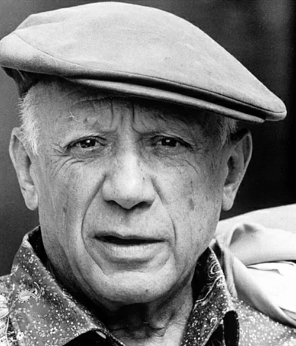

Pablo Picasso

Pablo Ruiz Picasso[a][b] (25 October 1881 – 8 April 1973) was a Spanish painter and sculptor who spent most of his adult life in France.
The some work of Pablo Picassoi
Pablo Ruiz Picasso[a][b] (25 October 1881 – 8 April 1973) was a Spanish painter and sculptor who spent most of his adult life in France.
The some work of Pablo Picassoi
Leonardo da Vinci, properly named Leonardo di ser Piero da Vinci[b] ("Leonardo, son of ser Piero from Vinci"),[9][10][d] was born on 15 April 1452 in, or close to, the Tuscan hill town of Vinci, about 35 kilometres (22 miles) from Florence.
The some work of Leonardo da Vinci
Vincent Willem van Gogh[note 1] (Dutch: [ˈvɪnsɛnt ˈʋɪləɱ vɑŋ ˈɣɔx] ⓘ;[note 2] 30 March 1853 – 29 July 1890) was a Dutch Post-Impressionist painter who is among the most famous and influential figures in the history of Western art. In just over a decade he created about 2,100 artworks, including around 860 oil paintings, most of them in the last two years of his life. They include landscapes, still lifes, portraits and self-portraits, and are characterised by bold colours and dramatic, impulsive and expressive brushwork that contributed to the foundations of modern art. His suicide at age 37 followed years of mental illness and poverty.
The some work of Vincent van Gogh